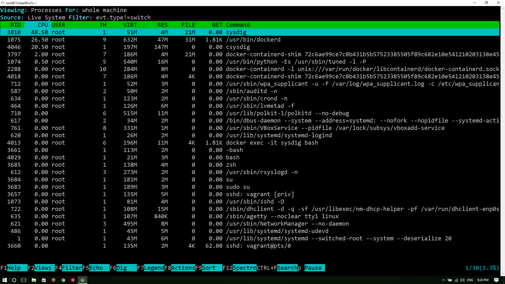

Managing Containers - Learning about Common Container Operations
In the previous chapter, we have learnt about container lifecycle management including how to create, launch, connect to, stop and remove containers. In this chapter, we are going to learn how to launch a container with a pre built app image and how to access the app with published ports. We will also learn about common container operations such as inspecting container information, checking logs and performance stats, renaming and updating the properties of a container, limiting resources etc.
As part of this lab, we are going to launch a python based webapp for a sample voting application.
Launching a container with a pre built app image
To launch vote container run the following command. Don't bother about the new flag -P now. We will explain about that flag later in this chapter
docker container run -idt -P schoolofdevops/vote
[Output]
Unable to find image 'schoolofdevops/vote:latest' locally
latest: Pulling from schoolofdevops/vote
Digest: sha256:9195942ea654fa8d8aeb37900be5619215c08e7e1bef0b7dfe4c04a9cc20a8c2
Status: Downloaded newer image for schoolofdevops/vote:latest
7d58ecc05754b5fd192c4ecceae334ac22565684c6923ea332bff5c88e3fca2b
Lets check the status of the container
docker ps -l
[Output]
CONTAINER ID IMAGE COMMAND CREATED STATUS PORTS NAMES
7d58ecc05754 schoolofdevops/vote "gunicorn app:app -b…" 27 seconds ago Up 26 seconds 0.0.0.0:32768->80/tcp peaceful_varahamihira
Renaming the container
We can rename the container by using following command
docker rename 7d58ecc05754 vote
[replace 7d58ecc05754 with the actual container id on your system ]
We have changed container's automatically generated name to vote. This new name can be of your choice. The point to understand is this command takes two arguments. The Old_name followed by New_name Run docker ps command to check the effect of changes
docker ps
[Output]
CONTAINER ID IMAGE COMMAND CREATED STATUS PORTS NAMES
7d58ecc05754 schoolofdevops/vote "gunicorn app:app -b…" 3 minutes ago Up 3 minutes 0.0.0.0:32768->80/tcp vote
As you can see here, the container is renamed to vote. This makes referencing container in cli very much easier.
Ready to vote ?
Let's see what this vote application does by connecting to that application. For that we need,
* Host machine's IP
* Container's port which is mapped to a host's port
Let's find out the port mapping of container to host. Docker provides subcommand called port which does this job
docker port vote
[Output]
80/tcp -> 0.0.0.0:32768
So whatever traffic the host gets in port 2368 will be mapped to container's port 32768
Let's connect to http://IP_ADDRESS:PORT to see the actual application
Finding Everything about the running container
This topic discusses about finding metadata of containers. These metadata include various parameters like,
* State of the container
* Mounts
* Configuration
* Network, etc.,
Inspecting
Lets try this inspect subcommand in action
docker inspect vote
Data output by above command contains detailed descriptino of the container an its properties. is represented in JSON format which makes filtering these results easier.
Checking the Stats
Stats command
This command returns a data stream of resource utilization used by containers. The flag --no-stream disables data stream and displays only first result
docker stats --no-stream=true vote
docker stats
Top command
To display the list of processes and the information about those processes that are running inside the container, we can use top command
docker top vote
[Output]
UID PID PPID C STIME TTY TIME CMD
vagrant 6219 6211 0 14:07 ? 00:00:00 npm
vagrant 6275 6219 0 14:07 ? 00:00:00 sh -c node index
vagrant 6276 6275 0 14:07 ? 00:00:11 node index
Examine Logs
Docker log command is to print the logs of the application inside the container. In our case we will see the log output of vote application
docker logs vote
[Output]
[2018-05-01 15:36:01 +0000] [1] [INFO] Starting gunicorn 19.6.0
[2018-05-01 15:36:01 +0000] [1] [INFO] Listening at: http://0.0.0.0:80 (1)
[2018-05-01 15:36:01 +0000] [1] [INFO] Using worker: sync
[2018-05-01 15:36:01 +0000] [10] [INFO] Booting worker with pid: 10
[2018-05-01 15:36:01 +0000] [11] [INFO] Booting worker with pid: 11
[2018-05-01 15:36:01 +0000] [12] [INFO] Booting worker with pid: 12
[2018-05-01 15:36:01 +0000] [15] [INFO] Booting worker with pid: 15```
If you want to **follow** the log in real-time, use **-f** flag
To follow the logs,
docker logs -f vote
Now try to read the articles available in our blog and see the log output gets updated in real-time. Hit ctrl+c to break the stream
Stream events from the docker daemon
Docker events serves us with the stream of events or interactions that are happening with the docker daemon. This does not stream the log data of application inside the container. That is done by docker logs command. Let us see how this command works
Open an another terminal. Let us call the old terminal as Terminal 1 and the newer one as Terminal 2.
From Terminal 1, execute docker events. Now you are getting the data stream from docker daemon
docker events
To understand how this command actually works, let us run a container from Terminal 2
docker run -it alpine:3.4 sh
If you see, in Terminal 1, the interaction with docker daemon, while running that container will be printed
[Output - Terminal 1]
2016-09-16T13:00:20.189028004Z container create 816fcc5e9c8dca13c76f3ff4546a7769bed497c4f4153b20ec34459c88f7b923 (image=alpine:3.4, name=tiny_franklin)
2016-09-16T13:00:20.190190470Z container attach 816fcc5e9c8dca13c76f3ff4546a7769bed497c4f4153b20ec34459c88f7b923 (image=alpine:3.4, name=tiny_franklin)
2016-09-16T13:00:20.257068692Z network connect c0237b5406920749b87460597b8935adf958bae1ce997afd827921a0dbc97cdc (container=816fcc5e9c8dca13c76f3ff4546a7769bed497c4f4153b20ec34459c88f7b923, name=bridge, type=bridge)
2016-09-16T13:00:20.346533821Z container start 816fcc5e9c8dca13c76f3ff4546a7769bed497c4f4153b20ec34459c88f7b923 (image=alpine:3.4, name=tiny_franklin)
2016-09-16T13:00:20.347811877Z container resize 816fcc5e9c8dca13c76f3ff4546a7769bed497c4f4153b20ec34459c88f7b923 (height=41, image=alpine:3.4, name=tiny_franklin, width=126)
Try to do various docker operations (start, stop, rm, etc.,) and see the output in Terminal 1
Attach to the container
Normally, when we run a container, we use -d flag to run that container in detached mode. But sometimes you might require to make some changes inside that container. In those kind of situations, we can use attach command. This command attaches to the tty of docker container. So it will stream the output of the application. In our case, we will see the output of vote application
docker attach vote
Hit our blogs url several times to see the output
[Output]
root@swarm-03:~# docker attach vote
[2018-05-01 15:44:49 +0000] [1] [INFO] Handling signal: winch
You can detach from the tty by pressing ctrl-p + ctrl-q in sequence. If you haven't started your container with -it flag, then it is not possible to get your host's terminal back. In that case, If you haven't started the container with -it option, the only way you will be able to detach from the container by using ctrl-c, which kills the process, in turns the container itself.
It is possible to override these keys too. For that we have to add --detach-keys flag to the command. To learn more, click on the following URL
https://docs.docker.com/engine/reference/commandline/attach/
Copying files between container and client host
We can copy files/directories form host to container and vice-versa
Let us create a file on the host
touch testfile
To copy the testfile from host machine to ghsot contanier, try
docker cp testfile vote:/opt
This command will copy testfile to vote container's /opt directory and will not give any output. To verify the file has been copies or not, let us log into container by running,
docker exec -it vote bash
Change directory into /opt and list the files
cd /opt
ls
[Output]
testfile
There you can see that file has been successfully copied. Now exit the container
Now you may try to cp some files from the container to the host machine
docker cp vote:/app .
ls
Controlling Resources
Docker provides us the granularity to control each container's resource utilization. We have several commands in the inventory to achieve this
Putting limits on Running Containers
First, let us monitor the utilization
docker stats --no-stream=true
[Example Output]
"docker stats --no-stream=true
CONTAINER ID NAME CPU % MEM USAGE / LIMIT MEM % NET I/O BLOCK I/O PIDS
7d58ecc05754 vote 0.02% 56.5MiB / 1.955GiB 2.82% 648B / 0B 0B / 0B 0
9fc1aec8cb6a gallant_brattain 0.00% 328KiB / 1.955GiB 0.02% 690B / 0B 0B / 0B 0
08f0242aa61c vote.2.qwxduexkwpmdnowouxjzwjwag 0.02% 56.33MiB / 1.955GiB 2.81% 1.94kB / 0B 0B / 0B 0
8469b95efc81 redis.4.s5i3kid9yohpbim05bsw59sh2 0.12% 6.223MiB / 1.955GiB 0.31% 1.36kB / 0B 0B / 0B 0
ce823d38adaf redis.1.qfx6geh6t9vuy8awq94u10m07 0.08% 6.227MiB / 1.955GiB 0.31% 7.25kB / 5.39kB 0B / 0B 0
For monitoring resources continuously,
docker stats --no-stream=true
You can see that Memory attribute has 0 as its value. 0 means unlimited usage of host's RAM. We can put a cap on that by using update command
docker update --memory 400M --memory-swap -1 vote
[Output]
vote
Let us check whether the change has taken effect or not
docker inspect vote | grep -i memory
docker stat
[Output]
"Memory": 419430400,
"KernelMemory": 0,
"MemoryReservation": 0,
"MemorySwap": 0,
"MemorySwappiness": -1,
As you can see, the memory utilization of the container is changed from 0 (unlimited) to 400 mb
Limiting Resources while launching new containers
The following resources can be limited using the update command
* CPU
* Memory
* Disk IO
* Capabilities
Open two terminals, lets call them T1, and T2
In T1, start monitoring the stats
docker stats
[Output]
CONTAINER CPU % MEM USAGE / LIMIT MM % NET I/O BLOCK I/O PIDS
b28efeef41f8 0.16% 190.1 MiB / 400 MiB 47.51% 1.296 kB / 648 B 86.02 kB / 45.06 kB 0
CONTAINER CPU % MEM USAGE / LIMIT MEM % NET I/O BLOCK I/O PIDS
b28efeef41f8 0.01% 190.1 MiB / 400 MiB 47.51% 1.296 kB / 648 B 86.02 kB / 45.06 kB 0
From T2, launch two containers with different CPU shares. Default CPU shares are set to 1024. This is a relative weight.
docker run -d --name st-01 schoolofdevops/stresstest stress --cpu 1
docker run -d --name st-02 -c 512 schoolofdevops/stresstest stress --cpu 1
When you launch the first container, it will use the full quota of CPU, i.e., 100%
[Output - After first container launch]
CONTAINER CPU % MEM USAGE / LIMIT MEM % NET I/O BLOCK I/O PIDS
b28efeef41f8 0.01% 190.1 MiB / 400 MiB 47.51% 1.944 kB / 648 B 86.02 kB / 45.06 kB 0
764f158d6523 102.73% 2.945 MiB / 1.797 GiB 0.16% 648 B / 648 B 3.118 MB / 0 B 0
[Output - After second container lauch]
CONTAINER CPU % MEM USAGE / LIMIT MEM % NET I/O BLOCK I/O PIDS
b28efeef41f8 0.00% 190.1 MiB / 400 MiB 47.51% 2.592 kB / 648 B 86.02 kB / 45.06 kB 0
764f158d6523 66.97% 2.945 MiB / 1.797 GiB 0.16% 1.296 kB / 648 B 3.118 MB / 0 B 0
a13f98995ade 33.36% 2.945 MiB / 1.797 GiB 0.16% 648 B / 648 B 3.118 MB / 0 B 0
Observe stats in T1 Launch a couple more nodes with different cpu shares, observe how T2 stats change
docker run -d --name st-03 -c 512 schoolofdevops/stresstest stress --cpu 1
docker run -d --name st-04 schoolofdevops/stresstest stress --cpu 1
[Output - After all containers are launched]
CONTAINER CPU % MEM USAGE / LIMIT MEM % NET I/O BLOCK I/O PIDS
b28efeef41f8 0.00% 190.1 MiB / 400 MiB 47.51% 3.888 kB / 648 B 86.02 kB / 45.06 kB 0
764f158d6523 32.09% 2.945 MiB / 1.797 GiB 0.16% 2.592 kB / 648 B 3.118 MB / 0 B 0
a13f98995ade 16.02% 2.945 MiB / 1.797 GiB 0.16% 1.944 kB / 648 B 3.118 MB / 0 B 0
f04e9ea5627c 16.37% 2.949 MiB / 1.797 GiB 0.16% 1.296 kB / 648 B 3.118 MB / 0 B 0
abeab389a873 31.71% 2.949 MiB / 1.797 GiB 0.16% 648 B / 648 B 3.118 MB / 0 B 0
Close the T2 terminal
Exercises
Try to these exercises, to get a better understanding
* Put a memory limit
* Set disk iops
Launching Containers with Elevated Privileges
When the operator executes docker run --privileged, Docker will enable to access to all devices on the host as well as set some configuration in AppArmor or SELinux to allow the container nearly all the same access to the host as processes running outside containers on the host.
Example:
Running a sysdig container to monitor docker
Sysdig tool allows us to monitor the processes that are going on in the other containers. It is more like running a top command from one container on behalf of others.
docker run -itd --name=sysdig --privileged=true \
--volume=/var/run/docker.sock:/host/var/run/docker.sock \
--volume=/dev:/host/dev \
--volume=/proc:/host/proc:ro \
--volume=/boot:/host/boot:ro \
--volume=/lib/modules:/host/lib/modules:ro \
--volume=/usr:/host/usr:ro \
sysdig/sysdig:0.11.0 sysdig
[Output]
Unable to find image 'sysdig/sysdig:0.11.0' locally
0.11.0: Pulling from sysdig/sysdig
0f409b0f5b3d: Pull complete
64965da77fc6: Pull complete
588eeb0d4c30: Pull complete
9aa18e35b362: Pull complete
cc036f2dca14: Pull complete
33400f3af946: Pull complete
b39ed90e36fd: Pull complete
1fca16436380: Pull complete
Digest: sha256:ee9d66a07308c5aef91f070cce5c9fb891e4fefb5da4d417e590662e34846664
Status: Downloaded newer image for sysdig/sysdig:0.11.0
6ba17cf2af7b87621b3380517af45c5785dc8cda75111f0f8c36bb83e163a120
docker exec -it sysdig bash
csysdig
[Output]

After this, press f2 and select containers tab
Now check what are the processes are running in other containers

References
[Resource Management in Docker by Marek Goldmann] (https://goldmann.pl/blog/2014/09/11/resource-management-in-docker/)